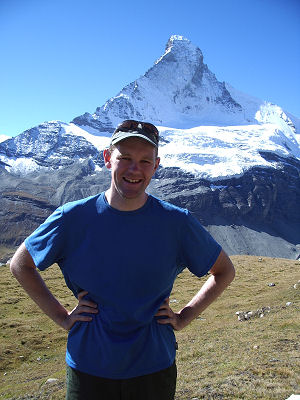

Hiking in the mountains has a powerful ability to rejuvenate mind and body. I discovered this on my first visit to the Alps in 1997 and, after a few summers of gaining experience through short hikes, I graduated to multi-week treks in 2001. Since then, Angie and I have hiked a number of long distance routes in the French Alps, Swiss Alps and French Pyrenees. In 2008, we completed our first ropes-and-crampons ascent.
Below is a summary of major trips undertaken in the Alps and Pyrenees. Novice randonneurs may be interested to read a few tips.
Now with bébé-à-bord, five days of walking based in Val d'Arpette in Switzerland, including climbs to Fenêtre d'Arpette and Cabane d'Orny. September 2012.
A multi-GR trek, initially following the Tour du Mont Blanc from Champex to Les Chapieux, then a short section of the Tour de Beaufortain to join the GR5 near Col de Bresson, then south to Briançon. This time, we took in the full GR5 route through the Vanoise. September 2011.
A second trip across Switzerland, starting in Sargans and taking in alternative routes and stops. On reaching Adelboden, we transferred south to Saas Fee, from where we walked around to Zermatt. September 2010.
A trek around the Queyras region of the French Alps. The stage including Col des Thures is a particular highlight. There are many opportunities for peakbagging along the entire route. September 2009.
A trek in the southern French Alps, from Modane in Savoie, through Haute-Alpes, Alpes-de-Haute-Provence and Alpes-Maritimes, to Menton on the Mediterranean coast. The GR52 variant through Mercantour National Park is highly recommended. September 2008.
A climb on the Monte Rosa massif on the Swiss-Italian border. July 2008.
A trek in the western French Pyrenees, from St-Jean-Pied-de-Port, through Pyrénées-Atlantiques and Hautes-Pyrénées, to Bagnères-de-Luchon in Haute Garonne. Misty. September 2007.
A trek in the northern French Alps, from Thonon-les-Bains on Lake Geneva, through Haute Savoie and Savoie, to Modane. Included the GR55 variant from Lac de Tignes to Modane. The section in Vanoise National Park is a highlight, while the negotiation of the Col de Chavière during a snowstorm was a challenge. September 2006.
A second run at this classic, starting from Verbier, and taking in the ladders to Pas de Chèvres, a double-étape from Arolla to Cabane de Moiry (not recommended!), and the Europaweg from Grächen to Zermatt. After reaching Zermatt, a series of hikes including the peaks of Mettelhorn and Oberrothorn. September 2005.
A trek across Switzerland, from Sargans in the North-East, through the Berner Oberland, to Montreux on Lake Geneva. Long. September 2004.
A trek around the Massif des Écrins, clockwise starting and ending in Bourg d'Oisans. Highlights include the descent from Col de la Vaurze and the climb to Col de la Muzelle. Rugged and remote, 10/10. September 2003.
A trek around the Massif du Mont Blanc, through France, Switzerland and Italy. There are many delightful sections (weather permitting), including Col de la Seigne and Col du Tricot. The warm-up was an abbreviated Tour du Val de Bagnes. September 2002.
A trek through the Pennine Alps from Chamonix, France to Zermatt, Switzerland. We battled heat, snow, mist and a few tumbles on our first randonnée. July/August 2001.